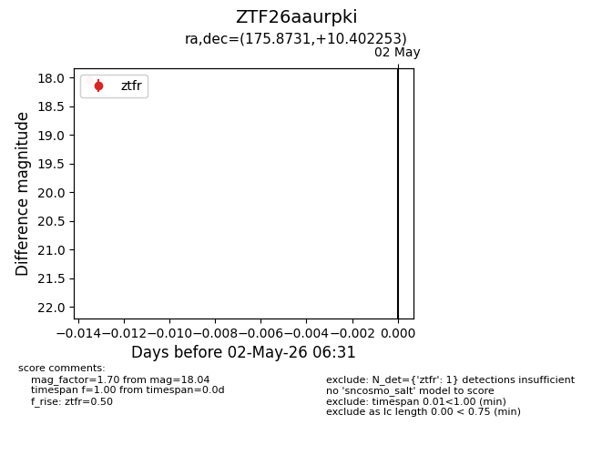
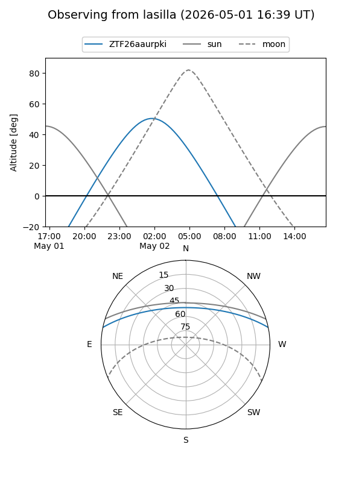
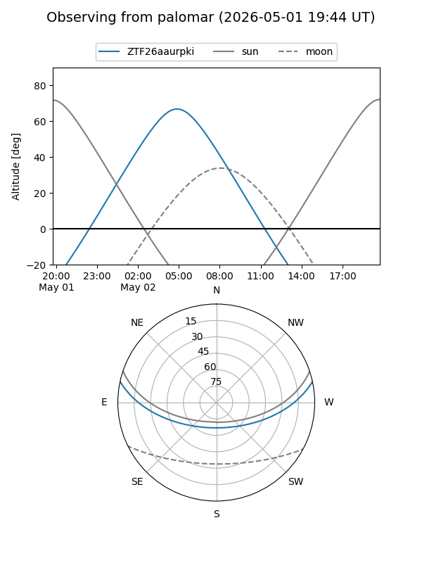
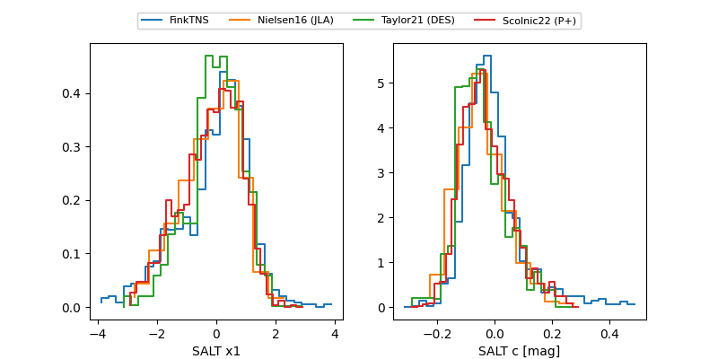

ZTF26aaurpki
Target ZTF26aaurpki at 2026-05-02 06:41
Aliases and brokers:
FINK: link
Lasair: link
ALeRCE: link
alt names
ZTF26aaurpki (ztf,fink_ztf)
Coordinates:
equatorial (ra, dec) = 175.8731,+10.40225
equatorial (HMS+DMS) = 11:43:29.55,+10:24:08.11
galactic (l, b) = (255.9616,+66.85367)
Flags:
Photometry:
last ztfr=18.04
1 ztfr detections
Lightcurve

Visibility


Additional plots
